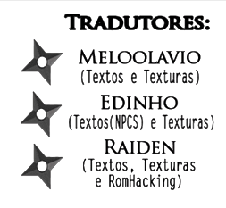

Esse é o quinto jogo da série Narutimate Ninja (Naruto Ultimate
Ninja) lançado para o Playstation®2 pela Bandai e a CyberConnect2. O
jogo possui algumas pequenas e vastas diferenças de seu antecessor, o
Ultimate Ninja 4... Suporte em Combate PvP, +Missões, Remoção do Modo
Herói e a mais notável, a adição da história até o ponto de encontro
com o Sasuke no anime e um extra... Diferente dos outros jogos da
série, este foi lançado apenas no Japão e na Europa.
Projeto de Tradução
Este projeto é especial, esse foi o meu segundo projeto,
depois do Genji, esse era para ser o primeiro, só não foi por
eu não ter conhecimento suficiente, algo que fui adquirindo aos
poucos com ajuda de vários RomHackers, quero deixar agradecimenteo
ao MummRaSTR, HNNEWGAMES, Gledson999. Meu primeiro desafio no jogo
foi o DATA.CVM, que mais tarde resolvi usando a ferramenta ROFS CVM,
mas logo após eu tive um formato que até hoje temos novas
descobertas com ajuda da
Narutimatte Modding, o
CCSF (Cyber Connect System File),
mas o maior desafio que tive mesmo foi as texturas que não pareciam
tão acessíveis, até eu encontrar a ferramenta para tal e modificar
para funcionar com o fomato como PNG e não BMP(já que as texturas
contêm transparência), nesse período de testes fiquei muito tempo
testando diversas coisas até chegar a aprender o formato de Píxel,
como é escrito e lido, assim com esse projeto eu pela primeira vez
aprendi Formato de Pixel(Bpp, Resolução, Pixel Storage) e com isso
segui em frente.
Ao ver que o Meloolavio tinha um projeto de dublagem do jogo
na época, decidi mergir com ele minha ideia e ele aceitou... O que
deu origem a uma parceria incrível para mim até hoje!(2019)

Tutorial de Aplicação
Progresso Atual
Texturas: 100% Menus: 100% Textos dos Movies: 100% Textos e Falas: 100% Revisão: 100%
Patch de Tradução
Versão do Patch de Tradução: 7.0 Tipo de Patch: XDELTA Versão do Jogo: PAL - SLES_556.05